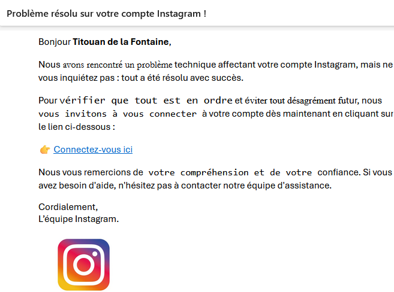

CTF
| CONTEXTE |
|---|
C'était un projet réalisé en trinôme, qui consistait à mettre en place une infrastructure volontairement
vulnérable afin qu'elle se fasse attaquer sous forme de scénario respectivement par des Lycéens, BTS et des
BUT.
L'infrastructure mise en place était la suivante:
| L'ATTAQUE DES LYCÉENS |
|---|
Pour la mise en place du scénario des lycéens il a fallu utiliser le PC Lycéen ainsi que le serveur windows
2016 virtuel créé sur le vcenter de l'iut.
Le scénario des lycéens consistait à les sensibiliser à un type d'attaque informatique très courant et
auquel ils ont sûrement déjà été victime. Il s'agit du PHISHING.
Leur mission était donc d'identifier les erreurs de phishing dissimulées dans un mail et un site web
douteux.
| RÉALISATION |
|---|
Pour mettre en place cette activité, il a fallu dans un premier temps créer le mail de phishing:

Après avoir créer le mail de phishing il fallait ensuite créer le faux site instagram, site vers lequel
renvoie le lien dans le mail.
J'ai également utilisé un script Js afin de faire apparaître un pop-up au bout de 30 secondes afin de
récolter les identifiants de connexion de ceux qui les rentreront.
Après il ne restait plus qu'à créer un serveur web IIS sur la machine virtuelle windows server 2016 pour
héberger le site web, afin qu'il soit accessible à partir de n'importe quel poste de l'iut connecté au
réseau.
Le scénario a donc pu se mettre en place, et il ne restait plus qu'à guider et challenger ces lycéens,
pour qu'ils puissent passer un bon moment tout en apprenant !

| COMPÉTENCES TRAVAILLÉES |
|---|
- RT1 - Administrer les réseaux et l'internet
-
RT2 - Connecter les entreprises et les usagers
Permettre aux collaborateurs de se connecter de manière sécurisée au SI -
RT3 - Créer des outils et applications informatiques pour les R&T
Mettre en place un environnement de travail collaboratif informatique
Participer à la formation des utilisateurs -
CYBER1 - Administrer un système d'information sécurisé
Mettre en oeuvre des outils avancés de sécurisation d'une infrastructure du réseau
Sécuriser les systèmes d'exploitation
Proposer une architecture sécurisée de système d'information pour une petite structure -
CYBER2 - Surveiller un système d'information sécurisé